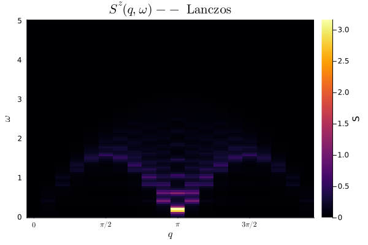
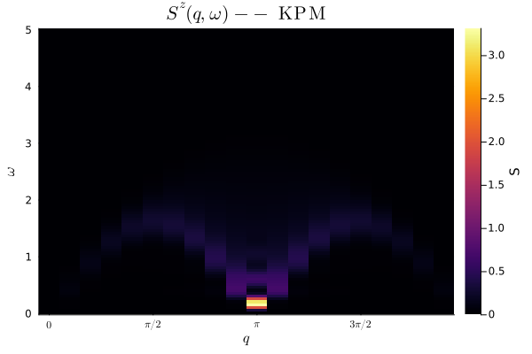

Spectroscopy
SpinDynamics.jl provides static and dynamical spin structure factors through a high-level interface.
Dynamical structure factor
A typical zero-temperature calculation starts from the ground state:
using SpinDynamics
L = 20
model = XXZChain(
L;
Jxy = 1.0,
Jz = 1.0,
nup = L ÷ 2,
)
E0, ψ0 = groundstate(model)
q = momenta(model)
ω = collect(range(0.0, 5.0; length = 100))The same public interface can then use either Lanczos or KPM.
Lanczos
S_lanczos = dynamical_structure_factor(
model,
ψ0,
q,
ω;
method = :lanczos,
lanc_m = 100,
eta = 0.05,
)Kernel Polynomial Method
S_kpm = dynamical_structure_factor(
model,
ψ0,
q,
ω;
method = :kpm,
kpm_m = 80,
kernel = :jackson,
)Both approaches describe the same spectral structure but use different numerical representations and broadening mechanisms.
Lanczos

KPM

Static structure factor
The static structure factor is available through structure_factor:
Sq = structure_factor(model, ψ0)Momentum grid
For translationally invariant chains, the discrete lattice momenta can be obtained with:
q = momenta(model)The returned values correspond to the lattice momenta compatible with the system size.